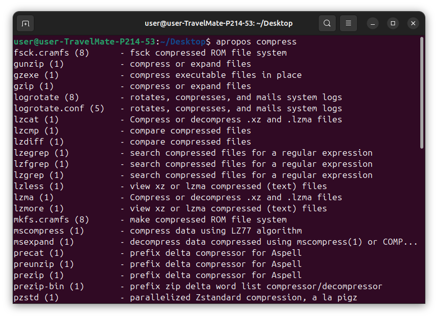
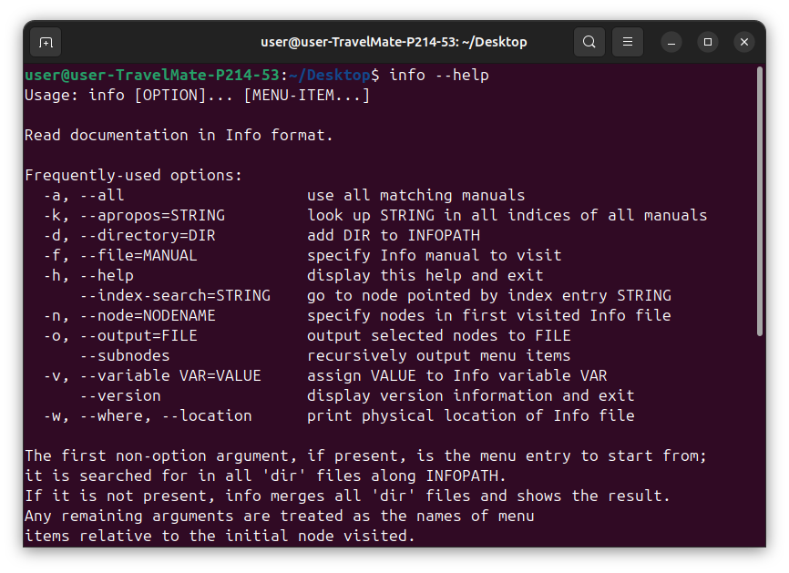
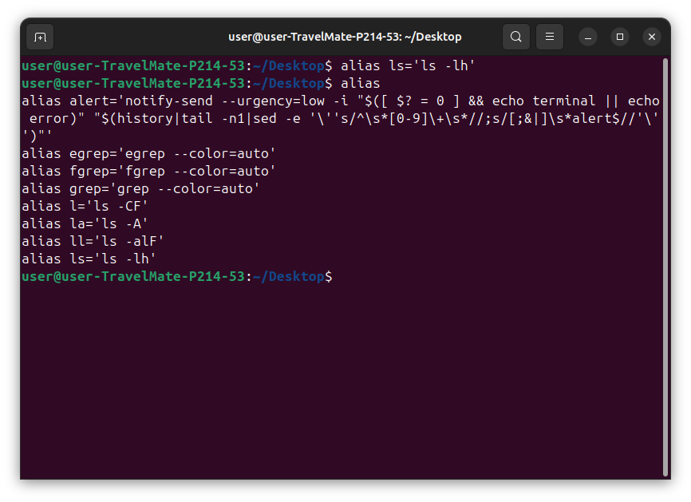
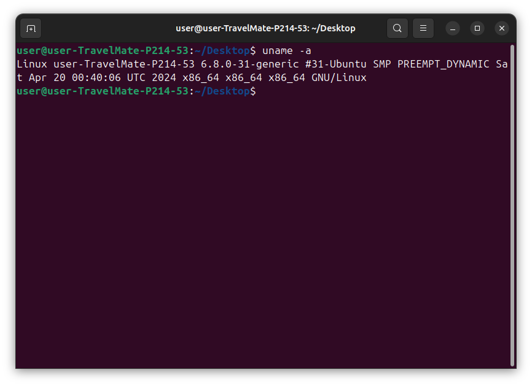
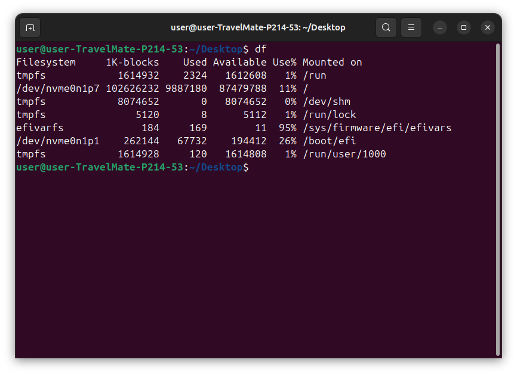
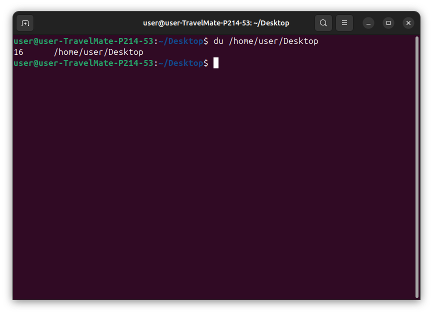
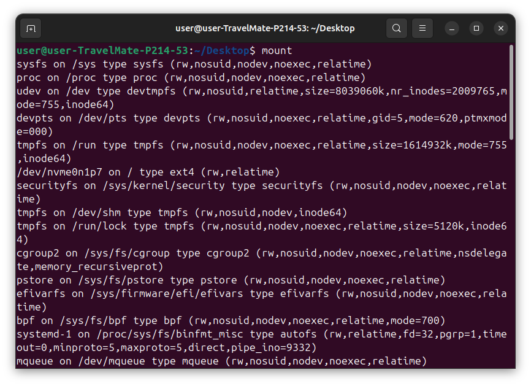
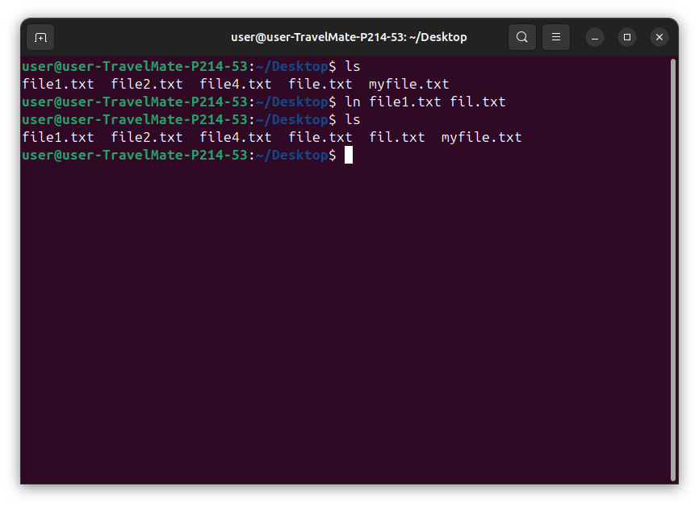
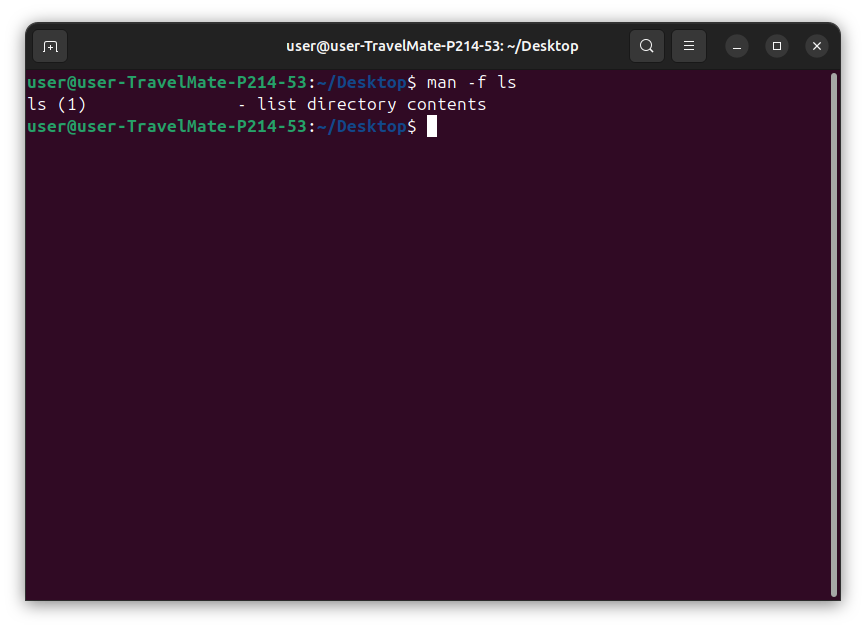

Purpose: Searches the manual page descriptions for a keyword.
Example:
apropos "file management"
This searches for any command with "file management" in its description.
Purpose: Displays detailed documentation for a command.
Example:
info ls
This opens detailed documentation for the ls command.
Purpose: Create a shortcut for a command.
Example:
alias cls='clear'
This creates an alias for the clear command.
Purpose: Displays system information such as kernel name, version, and architecture.
Example:
uname -a
This shows all available system information.
Purpose: Shows disk space usage for file systems.
Example:
df -h
This displays disk space usage in a human-readable format.
Purpose: Displays disk usage of files and directories.
Example:
du -sh *
This shows the disk usage of files and directories in the current directory in a human-readable format.
Purpose: Mounts a file system or device.
Example:
mount /dev/sdb1 /mnt
This mounts the device /dev/sdb1 to the /mnt directory.
Purpose: Creates hard or symbolic links.
Example:
ln -s /path/to/file /path/to/link
This creates a symbolic link from the file to the link.
Purpose: Displays the manual for a command.
Example:
man ls
This opens the manual page for the ls command.
